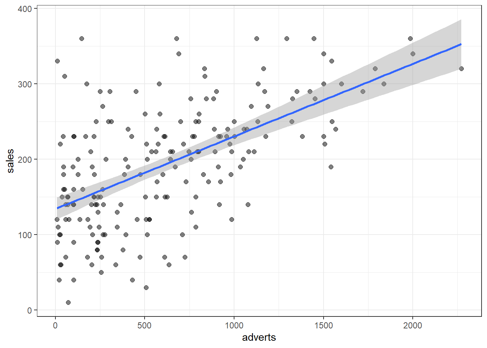

9 Regression analysis
9.1 Univariate regression and multiple regression
Packages need to follow along with the code, special packages will be loaded when and if needed.
library(tidyverse)
library(car)
library(haven)
library(here)Regression is not always easily visualised. This here is a function that will visualise a univariate slope along with some of the most important measurements. This is a slight adaption from a function I found here: find the article
regplot <- function (fit, name) {
ggplot(fit$model, aes_string(x = names(fit$model)[2], y = names(fit$model)[1])) +
geom_jitter( alpha = .5, size = 2) +
stat_smooth(method = "lm") +
labs(title = name, subtitle = paste("Adj R2 = ",signif(summary(fit)$adj.r.squared, 5),
"Intercept =",signif(fit$coef[[1]],5 ),
" Slope =",signif(fit$coef[[2]], 5),
" P =",signif(summary(fit)$coef[4], 5)))+
theme_bw()
}Field uses data from album sales. When loading data in r the best way is to put your data files in an easy to access place - note that this is my path, the data file is album sales from chapter 8 or 9 depending on edition so load that.
data <- read_sav(here("Album Sales.sav"))
#Let´s change the names to low caps so we can type easily.
names(data) <- c('adverts', 'sales', 'airplay', 'image')
#Taking a peek at the data
head(data)## # A tibble: 6 x 4
## adverts sales airplay image
## <dbl> <dbl> <dbl> <dbl>
## 1 10.3 330 43 10
## 2 986. 120 28 7
## 3 1446. 360 35 7
## 4 1188. 270 33 7
## 5 575. 220 44 5
## 6 569. 170 19 5summary(data)## adverts sales airplay image
## Min. : 9.104 Min. : 10.0 Min. : 0.00 Min. : 1.00
## 1st Qu.: 215.918 1st Qu.:137.5 1st Qu.:19.75 1st Qu.: 6.00
## Median : 531.916 Median :200.0 Median :28.00 Median : 7.00
## Mean : 614.412 Mean :193.2 Mean :27.50 Mean : 6.77
## 3rd Qu.: 911.226 3rd Qu.:250.0 3rd Qu.:36.00 3rd Qu.: 8.00
## Max. :2271.860 Max. :360.0 Max. :63.00 Max. :10.00All variables are treated as numerical. Before any formal analysis can be pursued, we should first visually inspect the variables.
#I usually prefer histograms without density curves but let’s use them both to visualise the distribution of our data.
ggplot(data, aes(adverts))+
geom_histogram(aes(y = ..density..), color = 'steelblue', size = 1)+
geom_density()ggplot(data, aes(sales))+
geom_histogram(aes(y = ..density..), color = 'steelblue', size = 1)+
geom_density()
ggplot(data, aes(airplay))+
geom_histogram(aes(y = ..density..), color = 'steelblue', size = 1)+
geom_density()
ggplot(data, aes(image))+
geom_histogram(aes(y = ..density..), color = 'steelblue', size = 1)+
geom_density()#looks pretty good, the ..density.. call is what gives the curve. So this is what we are working with, our IVs don’t need to be normal, the residuals need to be normal however. We don’t want heteroskedasticity. The neat thing with having multiple continuous variables is that it opens up plotting possibilities. Let’s make some graphs
ggplot(data = data, aes(y = sales, x = adverts
, size = image, colour = airplay))+
geom_point(alpha = .8)+
theme_bw()
#It is a bit messy, lets clean our plot by colouring by image. Let’s first colour by images that’s less than 5
ggplot(data = data, aes(y = sales, x = adverts
, size = airplay, colour = image < 5))+
geom_point(alpha = .5)+
theme_bw()
#interesting, most bands have an image at 5 or above, and those that don’t do not sell well regardless of their advert budget or image (the size of the points are roughly the same). Let’s colour by image <8
ggplot(data = data, aes(y = sales, x = adverts
, size = airplay, colour = image < 8))+
geom_point(alpha = .5)+
theme_bw()#Pretty graphs right? This is a better spread. But we can see that image does not seem to impact sales that much. There seems to be an effect, however. The most interesting thing with this graph however is that a high advert budget more or less promises good sales. No band with a budget less than 1 000 000 pounds have less than 100 000 album sales. A crude heuristic for bands wanting to fund their adverts with album sales could be to not sell their album for less than 10£. But this is of course bad advice. We have no information on the cost of the albums and sales are most likely affected by the cost of the album. Nevertheless, this is a fun graph.
Let’s make image into a factor so we can split our graphs better using the facet_wrap function
plotdata <- data
plotdata$image <- as.factor(plotdata$image)
#Now image is a factor with to levels. Let’s use the image of the band as colour
ggplot(data = plotdata, aes(y = sales, x = adverts
, size = airplay, colour = image))+
geom_point(alpha = .8)+
facet_wrap(~image)+
theme_bw()
#Or
ggplot(data = plotdata, aes(y = sales, x = adverts
, colour = airplay))+
geom_point(size = 3, alpha = .8)+
facet_wrap(~image)+
theme_bw()
#Note that one graph colours airplay while the other imageAnother interesting graph. Interestingly we can see that the band with the highest image has no advert budget. However, very few bands with that high image exists. The main idea this graph gives is that the slope between sales and advert budget does not seem to depend heavily on the image of the band. However, bands with low image often have less advert budget - and less sales. we can also see a relationship between airplay and sales, bigger points are usually a bit higher up on sales than small points.
So what are our expectations given the graphs? we should expect an effect of image airplay and adverts on sales, but there will probably not be any meaningful interactions between them since no relationship was observable in the graphs. let’s see if this holds up.
our first model is a simple regression of adverts on album sales. We would expect more sales with more advert budget take a look at the lm function for syntax and code reference.
?lm
#fitting the model
m1 <- lm(sales ~ adverts, data = data)One of the most important things we have to do when analysing data using statistical methods is checking that our assumptions for our method holds. For regression that: normality of residuals, independent errors, no multicollinearity, and homogeneity of variance in the residuals. Let’s check these things out.
#Checking the residuals and normality assumption
ggplot(data = data, aes(y = predict.lm(m1), x = m1$residuals))+
geom_point(size = 3, alpha = .4)+
geom_smooth(method = 'lm')
#Nice, the predicted values of our model is distributed quite normally across the residuals. This indicates that the variation in our model is roughly equal on low, medium, and high point estimates. We can also check the density of the
#Residuals - they should be normal around 0.
ggplot(data = data, aes(x = m1$residuals))+
geom_density()
ggplot(data = data, aes(x = m1$residuals))+
geom_histogram(colour = 'steelblue', size = 1)
#Nice, this means that our error in measurement isn’t systematically lower or higher than our fitted model.
#Checking error independence with Durbin Watson test
durbinWatsonTest(m1)## lag Autocorrelation D-W Statistic p-value
## 1 -0.04394305 2.032324 0.772
## Alternative hypothesis: rho != 0#Nice, the p-value is insignificant and the test-statistic is close to 2.Now that we have checked our assumptions and have a good ground to stand on, we can check the fit of our model.
#Checking the fit of the model
summary.lm(m1)##
## Call:
## lm(formula = sales ~ adverts, data = data)
##
## Residuals:
## Min 1Q Median 3Q Max
## -152.949 -43.796 -0.393 37.040 211.866
##
## Coefficients:
## Estimate Std. Error t value Pr(>|t|)
## (Intercept) 1.341e+02 7.537e+00 17.799 <2e-16 ***
## adverts 9.612e-02 9.632e-03 9.979 <2e-16 ***
## ---
## Signif. codes: 0 '***' 0.001 '**' 0.01 '*' 0.05 '.' 0.1 ' ' 1
##
## Residual standard error: 65.99 on 198 degrees of freedom
## Multiple R-squared: 0.3346, Adjusted R-squared: 0.3313
## F-statistic: 99.59 on 1 and 198 DF, p-value: < 2.2e-16#Lets plot this manually in ggplot using geom_smooth, on our model
ggplot(data, aes(y = sales, x = adverts))+
geom_point(alpha = .5, size = 2)+
geom_smooth(method = 'lm')+
theme_bw()
#Geom smooth fits a linear model to the data, method = 'lm' tells it that it’s a linear model. And there we have it, but by using the regplot function we created above we can put some of the info from the model on the plot.
regplot(m1, 'm1')summary.lm(m1)##
## Call:
## lm(formula = sales ~ adverts, data = data)
##
## Residuals:
## Min 1Q Median 3Q Max
## -152.949 -43.796 -0.393 37.040 211.866
##
## Coefficients:
## Estimate Std. Error t value Pr(>|t|)
## (Intercept) 1.341e+02 7.537e+00 17.799 <2e-16 ***
## adverts 9.612e-02 9.632e-03 9.979 <2e-16 ***
## ---
## Signif. codes: 0 '***' 0.001 '**' 0.01 '*' 0.05 '.' 0.1 ' ' 1
##
## Residual standard error: 65.99 on 198 degrees of freedom
## Multiple R-squared: 0.3346, Adjusted R-squared: 0.3313
## F-statistic: 99.59 on 1 and 198 DF, p-value: < 2.2e-16#Nice graph with good info :) Pretty neat right? now, what can we make of this? the slope estimates of ca 0.1 indicates that sales increase by .1 for every unit of adverts. The equates to roughly 100 sales per thousand pounds in advertising budget. Also, note the shaded line. This is our marginal 95% confidence interval. We can see that our uncertainty in the parameter estimate increases at the mode extreme values since we don’t have a lot of data regarding the dispersion on those levels of “adverts”.
We should also check for influential cases analytically, not just visually. we can do this with the function “lm.influence”.
summary(influence.measures(m1))## Potentially influential observations of
## lm(formula = sales ~ adverts, data = data) :
##
## dfb.1_ dfb.advr dffit cov.r cook.d hat
## 1 0.35 -0.27 0.35_* 0.93_* 0.06 0.01
## 10 0.22 -0.15 0.22 0.97_* 0.02 0.01
## 11 0.01 -0.02 -0.03 1.04_* 0.00 0.03_*
## 23 -0.02 0.04 0.04 1.05_* 0.00 0.03_*
## 42 0.29 -0.22 0.29 0.95_* 0.04 0.01
## 43 -0.02 0.04 0.05 1.06_* 0.00 0.05_*
## 75 -0.02 0.04 0.05 1.03_* 0.00 0.02
## 87 -0.06 0.11 0.12 1.05_* 0.01 0.05_*
## 88 0.02 -0.03 -0.03 1.05_* 0.00 0.04_*
## 92 -0.01 0.01 0.01 1.03_* 0.00 0.02
## 93 -0.01 0.03 0.03 1.04_* 0.00 0.03
## 113 -0.13 0.04 -0.17 0.96_* 0.01 0.01
## 124 0.09 0.02 0.18 0.96_* 0.02 0.01
## 126 0.05 -0.10 -0.11 1.03_* 0.01 0.02
## 169 0.32 -0.23 0.33_* 0.92_* 0.05 0.01
## 175 0.03 -0.07 -0.08 1.03_* 0.00 0.02
## 184 0.08 -0.13 -0.13 1.08_* 0.01 0.06_*summary(cooks.distance(m1))## Min. 1st Qu. Median Mean 3rd Qu. Max.
## 3.000e-08 3.380e-04 1.576e-03 4.416e-03 6.314e-03 5.716e-02#let’s look at the hat values manually
summary(hatvalues(m1))## Min. 1st Qu. Median Mean 3rd Qu. Max.
## 0.005000 0.005732 0.008030 0.010000 0.011305 0.063529hatvalues(m1)%>% sort.default(decreasing = TRUE) %>% head(20) ## 184 43 87 88 23 11 93 126
## 0.06352892 0.04590335 0.04502948 0.03687259 0.03442720 0.03108016 0.02569576 0.02435532
## 175 28 55 46 62 75 199 92
## 0.02353610 0.02344638 0.02334463 0.02201132 0.02170914 0.02170914 0.02170914 0.01997151
## 3 128 20 102
## 0.01971805 0.01894939 0.01751014 0.01656749Going by cooks distance we don’t seem to have any very influential values, that is, values exceeding 1. However, we have some values that exceeds three times the leverage or hatvalues. if we go by hoaglin and welch guides of looking at values exceeding three times the average, that is values exceeding .03. that is, observation 11, 23, 88, 87, 43 and 184. What happens if we remove them?
clean_data <- slice(data, -c(11, 23, 88, 87, 43, 184))
clean_m1 <- lm(sales~adverts, clean_data)
regplot(clean_m1, 'clean m1')
summary.lm(clean_m1)##
## Call:
## lm(formula = sales ~ adverts, data = clean_data)
##
## Residuals:
## Min 1Q Median 3Q Max
## -152.910 -44.484 -0.291 38.368 211.845
##
## Coefficients:
## Estimate Std. Error t value Pr(>|t|)
## (Intercept) 134.18426 8.00113 16.771 < 2e-16 ***
## adverts 0.09596 0.01116 8.602 2.76e-15 ***
## ---
## Signif. codes: 0 '***' 0.001 '**' 0.01 '*' 0.05 '.' 0.1 ' ' 1
##
## Residual standard error: 66.9 on 192 degrees of freedom
## Multiple R-squared: 0.2782, Adjusted R-squared: 0.2744
## F-statistic: 73.99 on 1 and 192 DF, p-value: 2.763e-15#.Does not change much in terms of estimation. We can compare the graphs using the grid arrange function from the gridExtra package
library(gridExtra)
m1_plot <- regplot(m1, 'original model')
clean_m1_plot <- regplot(clean_m1, 'influential observations removed')
grid.arrange(m1_plot, clean_m1_plot, name = c('original', 'clean'))
#.Here we can easily see that the influential observations were the cases with very high advertising budgets. it might be prudent to use the updated model, but no model is “better” than the other. We should use the model that helps us answer our research question best - “horses for courses”
A fast way, but less pleasing and not as hands on, is to simply use the “plot” function. It gives much of the same information
plot(m1)


plot(clean_m1)


#.Note that the spread of fitted to residuals is much nicer when we exclude the influential observations.
let’s kick this up a notch and run a multiple regression on a split sample so that we can cross-validate our model. let’s take all the variables in our data
#Splitting our sample randomly using rbinom
set.seed(123)
data_partition <- rbinom(200, 1, prob = .5)
data <- cbind(data, data_partition)
rm(data_partition)
#The binary variable "data partition" is our random divide of the sample in to 2. We will run the regression on one part of the sample and see how well it predicts the data in the second sample. let’s call it training data and test data.
training_data <- filter(data, data_partition == 1)
glimpse(training_data$data_partition)## int [1:97] 1 1 1 1 1 1 1 1 1 1 ...test_data <- filter(data, data_partition == 0)
glimpse(test_data$data_partition)## int [1:103] 0 0 0 0 0 0 0 0 0 0 ...Now we have our two samples, lets fit our training model. it works the same way as the simple regression, but we just add the additional IVs like you would in a normal regression formula. but first let’s standardize the data so it’s more easily comparable
#Standardising, or, "scaling" our data
z_training_data <- data.frame(scale(training_data))
z_test_data <- data.frame(scale(test_data))
#Fitting the multiple regression
training_model <- lm(sales ~ adverts + image + airplay, data = z_training_data)Like for the simple regression we need to check our assumptions
#Checking the residuals and normality assumtions
ggplot(data = training_data, aes( y = predict.lm(training_model)
, x = training_model$residuals))+
geom_point(size = 3, alpha = .4)+
geom_smooth(method = 'lm')
#Looks good
ggplot(data = training_data, aes(x = training_model$residuals))+
geom_density()ggplot(data = training_data, aes(x = training_model$residuals))+
geom_histogram(colour = 'steelblue', size = 1)
#Nice
#We need to check for multicollinearity when we do multiple regression. A cool way to do this is with GGally, but we can also just calculate VIF and tolerance(1/vif)
vif(training_model)## adverts image airplay
## 1.063294 1.066953 1.0533051/vif(training_model) ## adverts image airplay
## 0.9404740 0.9372484 0.9493924#Tolerance is simply 1 divided by the VIF. Our vif should be <10 and our tolerance
# >.2.
library(GGally)
ggpairs(training_model)
#Don´t worry about this, this is just a cool diagnostic tool with loads of info in a single plot with a very simple call.
#Checking error independence with Durbin Watson test
durbinWatsonTest(training_model)## lag Autocorrelation D-W Statistic p-value
## 1 0.00282891 1.887567 0.586
## Alternative hypothesis: rho != 0#Still looks good, but notice that the test statistic is less close to 2.
#Small sample = badNow, let’s check the fit of out model
summary.lm(training_model)##
## Call:
## lm(formula = sales ~ adverts + image + airplay, data = z_training_data)
##
## Residuals:
## Min 1Q Median 3Q Max
## -1.4006 -0.2931 -0.0123 0.3958 1.3417
##
## Coefficients:
## Estimate Std. Error t value Pr(>|t|)
## (Intercept) 1.215e-16 6.004e-02 0.000 1.000000
## adverts 4.901e-01 6.223e-02 7.876 6.16e-12 ***
## image 2.161e-01 6.234e-02 3.466 0.000802 ***
## airplay 4.666e-01 6.194e-02 7.532 3.18e-11 ***
## ---
## Signif. codes: 0 '***' 0.001 '**' 0.01 '*' 0.05 '.' 0.1 ' ' 1
##
## Residual standard error: 0.5913 on 93 degrees of freedom
## Multiple R-squared: 0.6613, Adjusted R-squared: 0.6503
## F-statistic: 60.51 on 3 and 93 DF, p-value: < 2.2e-16regplot(training_model, 'training model')#.All estimates are significant, indicating that all variables contribute to the number of sales, we have also doubled the R2, we can explain much more of the variation with this model. Note also how the visuals suck. it’s hard to visualize multiple regression. But let’s try some ways of visualising.
One way is to use the broom package like so:
library(broom)
#We need to make image into a factor
training_data$image <- as.factor(training_data$image)
#We then fit the model that we want to plot
plot1 <- lm(sales ~ adverts + image, data = training_data)
#Then, using the augment function we can fit a slope to each level of "image"
ggplot(augment(plot1), aes(y = sales, x = adverts, col = image))+
geom_point()+
geom_smooth(method = 'lm', se = FALSE)+
theme_bw()
#.This is a visualization of the sales across advert budget grouped by the band image, we can see that bands with a bad image (1), have fever sales, but they also have less budget. But we also see differences in slope depending on image. the band with the best image has a flatter slope then the bands with slightly worse image. Note that we already know this from our previous graphs, and they are way less messy, this is not a very good graph I think.
Again, visualizing multiple regression is hard, since the dimensions become hard to grasp after two or more variables, given that we care about interactions. One other way is though plotting marginal predictions or coefficients. This illustrates the regression output quite nicely I think, this is sometimes referred to as a simple slopes graph.
#Lets extract the coefficients from the model
cf <- training_model$coef
intercept <- cf[1]
adverts <- cf[2]
adverts <- round(adverts, 4)
image <- cf[3]
image <- round(image, 4)
airplay <- cf[4]
airplay <- round(airplay, 4)
#Here they are
paste(adverts, image, airplay)## [1] "0.4901 0.2161 0.4666"#This is a grid of values so that the plot has structure - this will be invisible in the graph
statgrid <- data.frame( y = seq(from = 0, to = adverts, length = 100)
,x = seq(from = 0, to = 1, length = 100))
#Plotting the slopes
ggplot(data = statgrid, aes(x = x, y = y))+
geom_jitter(alpha = 0)+
geom_abline(intercept = intercept, slope = adverts
, col = 'blue', size = 1)+
geom_abline(intercept = intercept, slope = image
, col = 'red', size = 1)+
geom_abline(intercept = intercept, slope = airplay
, col = 'green', size = 1)+
ylab(label = 'standardised sale value')+
xlab(label = 'dependent variable slope')+
theme_bw()+
labs(title = 'Adverts = blue | Image = red | Airplay = green')
#Our simple slopes plotThis visualization shows the slopes from the model. That is, the increase in units of sales when the dependent variable increases with one independently. I do not see this type of visualisation often but i quite like it. I think it’s a neat way of visualising a regression output. It is quite abstract though, since it requires that you scale you DVs so they can fit the same plot.
Lastly, let’s see if we have any significant interaction effects, this is a little teaser for what we will do later on in the moderation chapter but I think it might be a good idea to see if we have an interaction here. Going by the graphs earlier we should not expect anything big.
# A third model that uses the interaction between image and adverts
m3 <- lm(sales ~ adverts*image + airplay, data = z_training_data)
summary.lm(m3)##
## Call:
## lm(formula = sales ~ adverts * image + airplay, data = z_training_data)
##
## Residuals:
## Min 1Q Median 3Q Max
## -1.4197 -0.2856 0.0063 0.4046 1.3321
##
## Coefficients:
## Estimate Std. Error t value Pr(>|t|)
## (Intercept) 0.01604 0.06137 0.261 0.79438
## adverts 0.49317 0.06214 7.937 4.87e-12 ***
## image 0.18976 0.06594 2.878 0.00498 **
## airplay 0.45808 0.06220 7.365 7.36e-11 ***
## adverts:image -0.07987 0.06652 -1.201 0.23294
## ---
## Signif. codes: 0 '***' 0.001 '**' 0.01 '*' 0.05 '.' 0.1 ' ' 1
##
## Residual standard error: 0.5899 on 92 degrees of freedom
## Multiple R-squared: 0.6665, Adjusted R-squared: 0.652
## F-statistic: 45.96 on 4 and 92 DF, p-value: < 2.2e-16#The interaction is not significant. let’s go all out and fit a full interaction model - our fourth model
m4 <- lm(sales ~ adverts*image*airplay, data = z_training_data)
summary.lm(m4)##
## Call:
## lm(formula = sales ~ adverts * image * airplay, data = z_training_data)
##
## Residuals:
## Min 1Q Median 3Q Max
## -1.39859 -0.27268 -0.00666 0.38561 1.33742
##
## Coefficients:
## Estimate Std. Error t value Pr(>|t|)
## (Intercept) 0.011502 0.068353 0.168 0.8668
## adverts 0.505923 0.070951 7.131 2.54e-10 ***
## image 0.185909 0.081013 2.295 0.0241 *
## airplay 0.445473 0.068210 6.531 3.93e-09 ***
## adverts:image -0.102109 0.086212 -1.184 0.2394
## adverts:airplay 0.002962 0.084294 0.035 0.9720
## image:airplay 0.074178 0.100145 0.741 0.4608
## adverts:image:airplay 0.029568 0.131518 0.225 0.8226
## ---
## Signif. codes: 0 '***' 0.001 '**' 0.01 '*' 0.05 '.' 0.1 ' ' 1
##
## Residual standard error: 0.5975 on 89 degrees of freedom
## Multiple R-squared: 0.6691, Adjusted R-squared: 0.643
## F-statistic: 25.71 on 7 and 89 DF, p-value: < 2.2e-16So, simply going by this the interaction terms does not do much for us. let’s just stick with our original training model and see how well it predicts our test data. Let’s extract our predictions
#We need to load in the caret package for this (more on this later in the cross validation chapter)
library(caret)
# Make predictions and compute the R2, RMSE and MAE
predictions <- training_model %>% predict(test_data)
data.frame( R2 = R2(predictions, test_data$sales),
RMSE = RMSE(predictions, test_data$sales),
MAE = MAE(predictions, test_data$sales))## R2 RMSE MAE
## 1 0.318754 242.4139 189.1693#We have an RMSE of 242, if the training model has a lower one, it fits better
#We need to make image numeric for prediction purposes
training_data$image <- as.numeric(training_data$image)
predictions.2 <- training_model %>% predict(training_data)
data.frame( R2 = R2(predictions.2, training_data$sales),
RMSE = RMSE(predictions.2, training_data$sales),
MAE = MAE(predictions.2, training_data$sales))## R2 RMSE MAE
## 1 0.390846 227.6169 167.243#So, not very unexpectedly, we have better fit on this model.
#Let´s store some predictions for plotting
#Prediction on the training data
pred_train <- training_model %>% predict(z_training_data)
#Prediction on the test data
pred_test <- training_model %>% predict(z_test_data) Let’s plot the predictions
#For reference, this is what a perfect prediction would look like
ggplot(data = data.frame(data), aes(sales))+
geom_abline(intercept = 0, slope = 1, size = 2, col = 'red')+
geom_point(aes(y =sales, x = sales), size = 4, alpha = .5)+
ylab(label = 'sales')+
labs(title = 'perfect prediction')+
theme_bw()
#Training data prediction
ggplot(data = data.frame(z_training_data), aes(sales))+
geom_abline(intercept = 0, slope = 1, size = 2, col = 'red')+
geom_point(aes(y =pred_train, x = sales), size = 4, alpha = .5)+
ylab(label = 'model predicted sales')+
theme_bw()
#.This shows how well our model performs, the red line indicating perfect predictions that is, if we could estimate the number of sales perfectly. Which we clearly can’t, let´s look at our out of sample prediction.
ggplot(data = data.frame(z_test_data), aes(sales))+
geom_abline(intercept = 0, slope = 1, size = 2, col = 'red')+
geom_point(aes(y =pred_test, x = sales), size = 4, alpha = .5)+
ylab(label = 'model predicted sales')+
theme_bw()#.Let’s compare all the plots using the grid arrange function again
perfect_pred <- ggplot(data = data.frame(scale(data)), aes(sales))+
geom_abline(intercept = 0, slope = 1, size = 2, col = 'red')+
geom_point(aes(y =sales, x = sales), size = 4, alpha = .5)+
ylab(label = 'sales')+
labs(title = 'perfect prediction')+
theme_bw()
insample_pred <- ggplot(data = data.frame(z_training_data), aes(sales))+
geom_abline(intercept = 0, slope = 1, size = 2, col = 'red')+
geom_point(aes(y =pred_train, x = sales), size = 4, alpha = .5)+
ylab(label = 'predicted sales')+
labs(title = 'insample prediction')+
theme_bw()
outsample_pred <- ggplot(data = data.frame(z_test_data), aes(sales))+
geom_abline(intercept = 0, slope = 1, size = 2, col = 'red')+
geom_point(aes(y =pred_test, x = sales), size = 4, alpha = .5)+
ylab(label = 'predicted sales')+
labs(title = 'out of sample prediction')+
theme_bw()
grid.arrange(perfect_pred, insample_pred, outsample_pred)#This last piece of code compiles the graphs And there we have it, this model seems pretty good. Nothing amazing, but pretty good. In “reality” out of sample predictions are usually worse, but since we have such a simple model with reasonable dependent variables, this is not that unexpected. We certainly dont have issues with over-fitting our model, which can cause it to make poor out of sample predictions.
In this chapter we have gone through a little bit of everything, we have some prediction some moderation some cross validation and of course the simple regression analysis. In future chapters we will take a closer look at all of these methods, if you want to have a more “real” example of regression check out the last chapter where we use real messy data for various analyses.